Yamabuki · SNES emulator · Zig
A fast, cross-platform Super Nintendo emulator, built to run full speed on underpowered ARM handhelds.
What it is
Yamabuki boots ROMs, renders every background mode, and plays sound — a scanline renderer with Mode 7 and hi-res, the full APU, an opt-in dot-accurate core, and the enhancement chips (Super FX, SA-1, DSP-1, Cx4). That is table stakes for an emulator.
What is interesting is the machinery built around it to keep the thing honest on a device with no cycles to spare. Every decision below exists to turn a promise into something a machine can check.
Timing a frame in CI is flaky, so the baseline pins instructions retired, master cycles, and VRAM fetches — identical across every build mode and architecture. Delete the tile-row decode cache and VRAM reads multiply by eight. CI goes red.
comptime parameterThe fast and accurate cores are one source, instantiated twice. Only seven sites in the whole core branch on which — all at scanline level, so the hot loops carry no branch and no function pointer.
Save states are comptime reflection over plain data, and the serializer refuses to write a pointer. Derived state must be rebuilt in postLoad() rather than persisted — so it cannot silently rot.
SDL3 is never linked: the frontend hand-ports the ABI it needs and dlopens the library. The handheld package then asserts the binary is statically linked — no interpreter, no NEEDED.
CI resolves the upstream vectors and ROMs by revision at run time. Only the hashes are committed. The 65816 is held to per-cycle bus parity over 5.12M cases, replayed through three drivers.
A Console is self-referential — the bus page table points into its own struct. Heap-allocate it and never move it. A moved Console has a page table pointing at its own corpse.
Games
Every golden test in the repo is homebrew. Running twenty of the canonical library for the first time proved that this is worth less than it looks: sixteen boot and render, four never produce a frame at all. Rendered here through crt-royale on an RTX 2070.
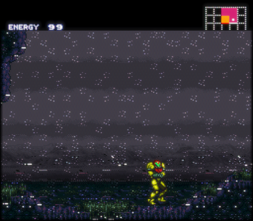
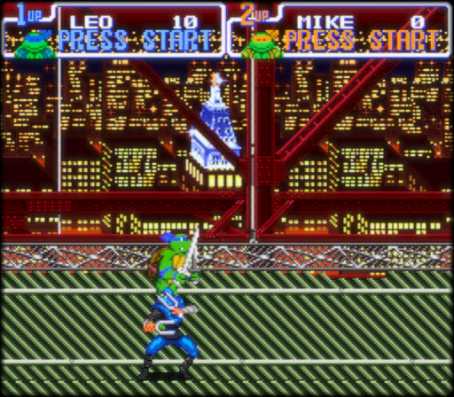
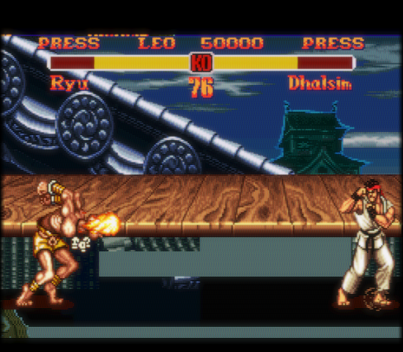
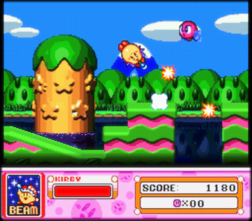
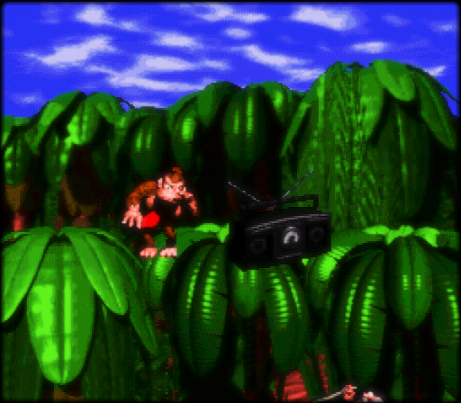
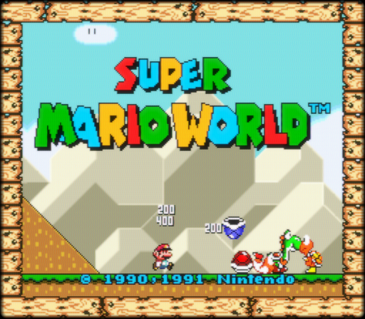
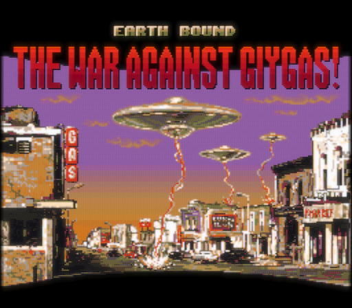
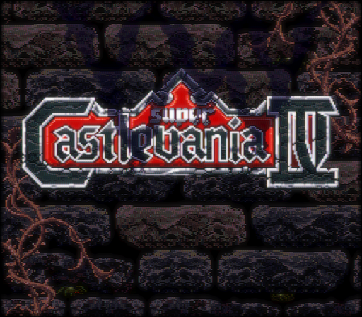
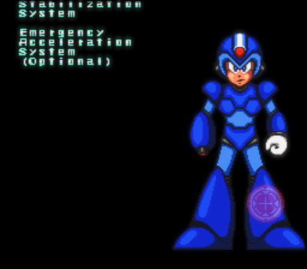
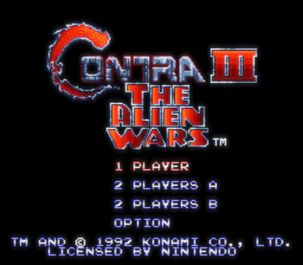
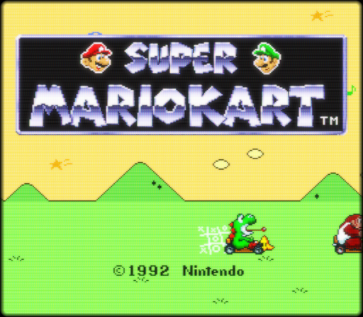
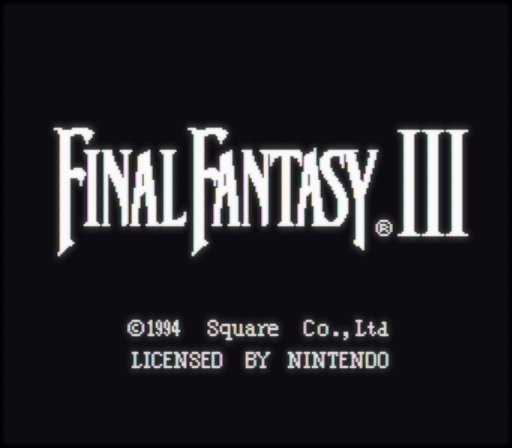
And the part worth publishing: four never render a frame — Chrono Trigger, F-Zero, Super Mario RPG, Yoshi's Island. Three of them sit on a forced-blank screen with an identical static framebuffer hash from frame 300 to frame 6,000: the CPU never reaches the point of enabling the display. F-Zero is the one that stings — LoROM, no coprocessor, a launch title. Super Mario Kart's Mode 7 attract demo renders as a flat yellow field while its title screen is pixel-perfect. Two more (DKC2 and Secret of Mana, both PAL) refuse on purpose, correctly, because PAL support is deferred. None of it was visible from a hundred passing homebrew goldens.
Shaders
Twelve libretro CRT presets ship — crt-royale, crt-guest-advanced, zfast-crt, crt-pi and more. They are slang shaders, which normally means linking glslang and SPIRV-Cross (~150k lines of C++) into the binary and compiling on the device at load.
Yamabuki bakes them ahead of time instead. The emulator contains no shader compiler, no SPIR-V, and no PNG decoder — the phosphor masks are decoded to raw RGBA on the build host too. It reads bytes and writes them at offsets. The pure-Zig core, the dependency-free build, and the static-musl package all survive intact.
# the toolchain is built by zig itself — no system g++, no Vulkan SDK
tools/fetch_shaders.sh # slang-shaders, pinned
tools/build_shader_tools.sh # glslang + SPIRV-Cross, via `zig c++`
zig build shaders # → GLSL ES 300 · GLSL 330 · GLSL ES 100
# then, on the device:
yamabuki-sdl mario.sfc --shader crt-lottesA preset is written for a GPU profile only if it actually transpiled and every uniform mapped to something the runtime supplies. A shader that cannot work is absent, not broken.
The through-line
Eleven slides on the decisions above — with the shader pipeline, the perf gate, and the one rule that stayed a promise. Arrow keys to advance, ? for every shortcut.
Build it
No headers, no import libraries, no package manager. Zig cross-compiles the handheld build on a bare machine.
zig build # headless + libretro core + SDL3 app
zig build test # unit tests
zig build bench-check # the deterministic perf gate
zig build -Doptimize=ReleaseFast -Dtarget=aarch64-linux-musl
tools/package_handheld.sh # static musl; asserts no dynamic deps